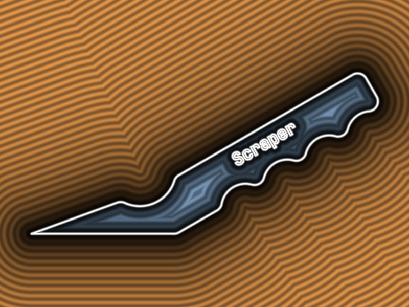
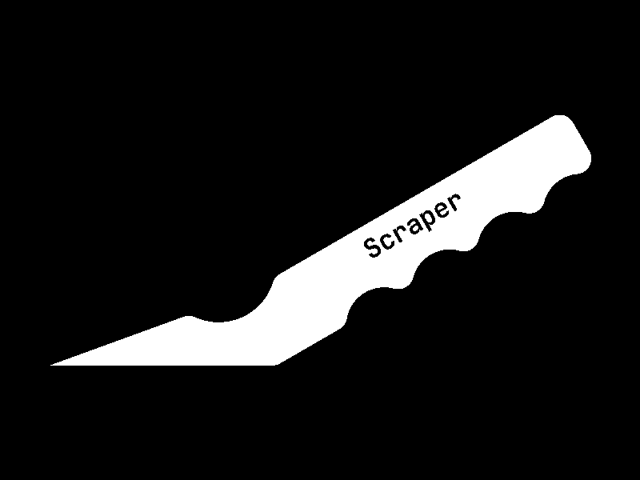

scraper
Drafted with AI, not yet reviewed
Bed scraper: a blade with a sharp tip, a handle with scallops for the fingers and a bite for the thumb, and a label.
Ported from src/printer/scraper.scad. Differences:
- The outline is found by keycap/points when the script runs, the circles as arcs, and rounded_polygon rounds its corners by ROUNDING, convex and concave: the original’s closing and opening, exactly except where the two orders could differ.
- The blade’s half-size triangle, sticking out of the rounded outline as the sharp tip, is a polygon of its own.
- The circles are round where the original’s $fn = 48 makes polygons.
- The label is set in the Nerd Font build of JetBrains Mono.
Compared with the original: within 0.0375 mm, the label left out.


Files
Source
// SPDX-License-Identifier: 0BSD // // Bed scraper: a blade with a sharp tip, a handle with scallops for the // fingers and a bite for the thumb, and a label. // // Ported from `src/printer/scraper.scad`. Differences: // - The outline is found by keycap/points when the script runs, the circles // as arcs, and rounded_polygon rounds its corners by ROUNDING, convex // and concave: the original's closing and opening, exactly except where // the two orders could differ. // - The blade's half-size triangle, sticking out of the rounded outline as // the sharp tip, is a polygon of its own. // - The circles are round where the original's $fn = 48 makes polygons. // - The label is set in the Nerd Font build of JetBrains Mono. // // Compared with the original: within 0.0375 mm, the label left out. import "keycap/points" as points; // --- Parameters --- const SCRAPER_LENGTH = 60.0; const SCRAPER_ANGLE = 20.0; const HANDLE_LENGTH = 100.0; const HANDLE_ANGLE = 30.0; const FINGER_DIAMETER = 20.0; const THUMB_DIAMETER = 30.0; const ROUNDING = SCRAPER_LENGTH * sind(SCRAPER_ANGLE) / 5; const HANDLE_THICKNESS = SCRAPER_LENGTH * sind(SCRAPER_ANGLE); // --- Outline --- // A point given in the handle's frame: turned by HANDLE_ANGLE about the // blade's back. fn handle_at(x, y) { let a = global::HANDLE_ANGLE; [global::SCRAPER_LENGTH + x * cosd(a) - y * sind(a), x * sind(a) + y * cosd(a)] } // A circle as two half arcs fn circle_points(center, r) { [[center[0] + r, center[1], #{arc: r}], [center[0] - r, center[1], #{arc: r}]] } // The blade's triangle, `scale` times its size fn blade(scale) { let l = global::SCRAPER_LENGTH * scale; [[0.0, 0.0], [l, l * tand(global::SCRAPER_ANGLE)], [l, 0.0]] } fn handle_points() { let bar = [ handle_at(0, 0), handle_at(global::HANDLE_LENGTH, 0), handle_at(global::HANDLE_LENGTH, global::HANDLE_THICKNESS), handle_at(0, global::HANDLE_THICKNESS), ]; let outline = points::union(blade(1.0), bar); let d = global::FINGER_DIAMETER; for finger in 0..4 { let at = handle_at(global::HANDLE_LENGTH - d / 2 - d * finger, -d / 4); outline = points::difference(outline, circle_points(at, d / 2)); } let thumb = handle_at(0, global::HANDLE_THICKNESS + global::THUMB_DIAMETER / 3); points::difference(outline, circle_points(thumb, global::THUMB_DIAMETER / 2)) } fn label() { let at = handle_at(global::HANDLE_LENGTH / 2, global::HANDLE_THICKNESS * 2 / 3); text("Scraper", #{size: global::HANDLE_THICKNESS / 4, font: "JetBrainsMono Nerd Font", halign: "center", valign: "center"}) .rotate_z(global::HANDLE_ANGLE) .move(at) } // --- Output --- let handle = rounded_polygon(handle_points(), ROUNDING); draw(union(handle, polygon(blade(0.5))).difference(label()));